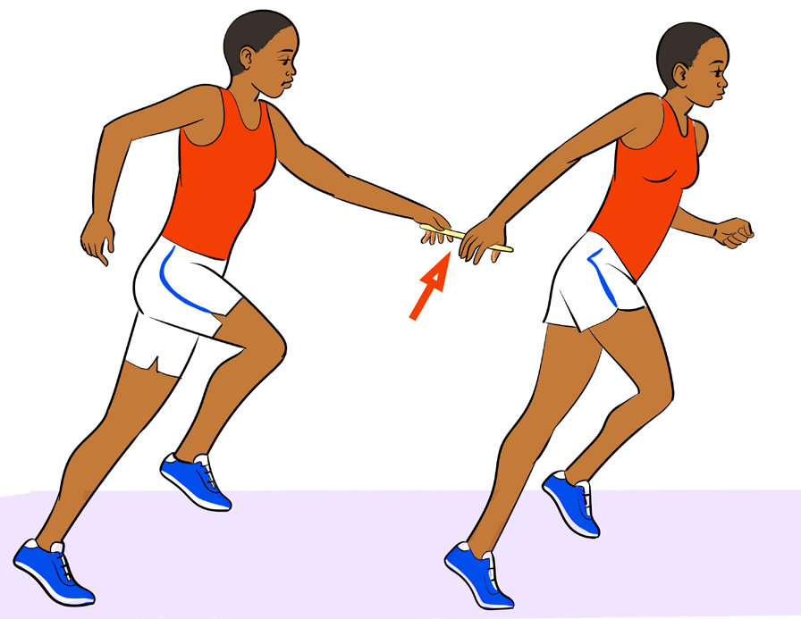
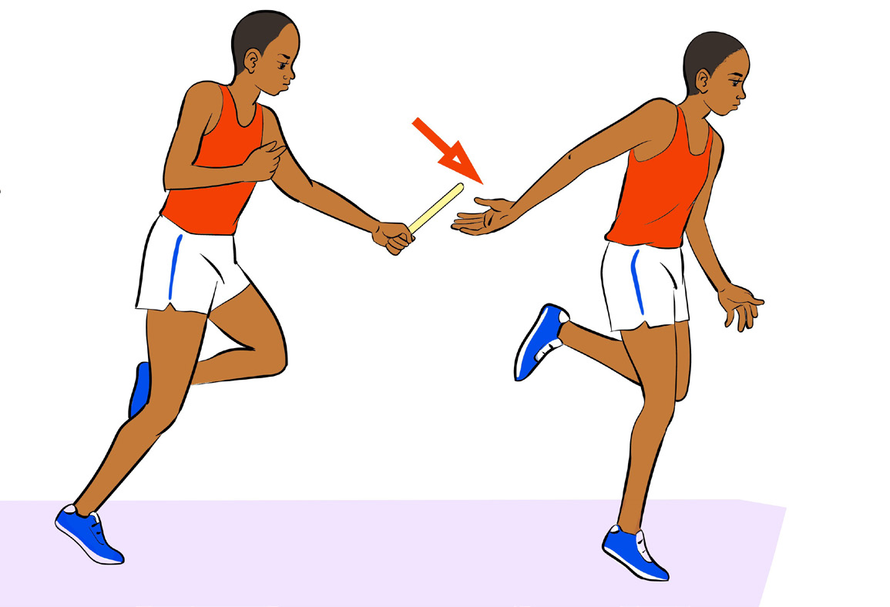

Downsweep technique
In the downsweep technique, the incoming runner holds the baton with a downward pushing motion onto the platform provided by the hand of the outgoing runner who reaches back to grip the baton, as shown in Figure 5.10. The most common technique used when executing the baton exchange in the down sweep exchange is a mixed method.

Activity 5.10
Practise baton exchange techniques and methods.
Question:
Why relay races involve exchanging baton?